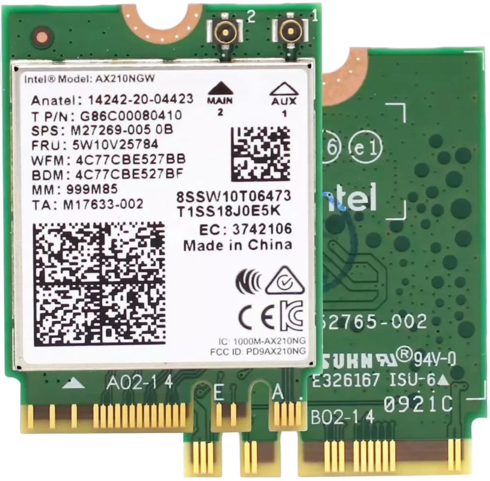

TARJETAS DE RED
Información relevante de las tarjetas de WIFI:
- Conexión : Inalámbrica (antenas integradas o externas).
- Velocidad : Hasta 1-2 Gbps (con estándares como Wi-Fi 6).
- Uso principal : Dispositivos móviles, hogares, o zonas donde no es viable el cableado.
- Instalación : Integradas en dispositivos o mediante ranuras PCI/USB.
- Ventajas : Flexibilidad y movilidad total.
- Desventajas : Velocidad variable por interferencias o distancia del router. 